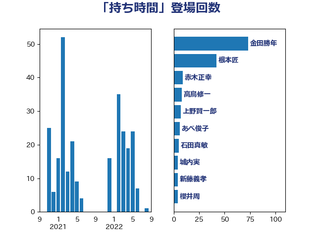

単語「持ち時間」

| 金田勝年 | 自由民主党 | 73 回 |
| 根本匠 | 自由民主党 | 42 回 |
| 赤木正幸 | 日本維新の会 | 9 回 |
| 高鳥修一 | 自由民主党 | 8 回 |
| 上野賢一郎 | 自由民主党 | 7 回 |
| あべ俊子 | 自由民主党 | 6 回 |
| 石田真敏 | 自由民主党 | 5 回 |
| 城内実 | 自由民主党 | 4 回 |
| 新藤義孝 | 自由民主党 | 4 回 |
| 櫻井周 | 立憲民主党 | 4 回 |
| 國重徹 | 公明党 | 3 回 |
| 海江田万里 | 立憲民主党 | 3 回 |
| 足立康史 | 日本維新の会 | 3 回 |
| 中谷真一 | 自由民主党 | 2 回 |
| 堤かなめ | 立憲民主党 | 2 回 |
| 大塚耕平 | 国民民主党 | 2 回 |
| 奥野総一郎 | 立憲民主党 | 2 回 |
| 守島正 | 日本維新の会 | 2 回 |
| 室井邦彦 | 日本維新の会 | 2 回 |
| 小倉將信 | 自由民主党 | 2 回 |
| 森本真治 | 立憲民主党 | 2 回 |
| 渡辺周 | 立憲民主党 | 2 回 |
| 熊谷裕人 | 立憲民主党 | 2 回 |
| 石原宏高 | 自由民主党 | 2 回 |
| 稲津久 | 公明党 | 2 回 |
| 細田健一 | 自由民主党 | 2 回 |
| 葉梨康弘 | 自由民主党 | 2 回 |
| 藤原崇 | 自由民主党 | 2 回 |
| 青柳仁士 | 日本維新の会 | 2 回 |
| 馬淵澄夫 | 立憲民主党 | 2 回 |
| 高橋千鶴子 | 日本共産党 | 2 回 |
| 鷲尾英一郎 | 自由民主党 | 2 回 |
| 齋藤健 | 自由民主党 | 2 回 |
| 伊東良孝 | 自由民主党 | 1 回 |
| 伊藤孝恵 | 国民民主党 | 1 回 |
| 佐々木さやか | 公明党 | 1 回 |
| 佐々木紀 | 自由民主党 | 1 回 |
| 佐藤茂樹 | 公明党 | 1 回 |
| 勝部賢志 | 立憲民主党 | 1 回 |
| 古賀之士 | 立憲民主党 | 1 回 |
| 吉田はるみ | 立憲民主党 | 1 回 |
| 小林茂樹 | 自由民主党 | 1 回 |
| 山口晋 | 自由民主党 | 1 回 |
| 岡本あき子 | 立憲民主党 | 1 回 |
| 川崎ひでと | 自由民主党 | 1 回 |
| 日下正喜 | 公明党 | 1 回 |
| 木原誠二 | 自由民主党 | 1 回 |
| 末松信介 | 自由民主党 | 1 回 |
| 本庄知史 | 立憲民主党 | 1 回 |
| 村井英樹 | 自由民主党 | 1 回 |
| 梅村聡 | 日本維新の会 | 1 回 |
| 森英介 | 自由民主党 | 1 回 |
| 櫛渕万里 | れいわ新選組 | 1 回 |
| 池畑浩太朗 | 日本維新の会 | 1 回 |
| 浜地雅一 | 公明党 | 1 回 |
| 渡辺創 | 立憲民主党 | 1 回 |
| 田村まみ | 国民民主党 | 1 回 |
| 石橋通宏 | 立憲民主党 | 1 回 |
| 神田憲次 | 自由民主党 | 1 回 |
| 福田達夫 | 自由民主党 | 1 回 |
| 薗浦健太郎 | 自由民主党 | 1 回 |
| 藤巻健太 | 日本維新の会 | 1 回 |
| 西村康稔 | 自由民主党 | 1 回 |
| 越智隆雄 | 自由民主党 | 1 回 |
| 青山周平 | 自由民主党 | 1 回 |
| 音喜多駿 | 日本維新の会 | 1 回 |
| 高村正大 | 自由民主党 | 1 回 |